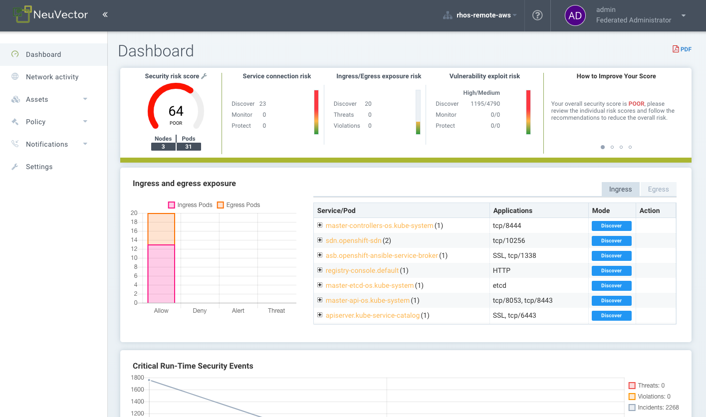

Rapports et notifications
Création de rapports
Les rapports peuvent être consultés et téléchargés depuis plusieurs menus dans la SUSE® Security console. Le tableau de bord affiche un résumé de la sécurité qui peut être téléchargé au format PDF. Le téléchargement PDF peut être filtré pour un espace de noms, si désiré.

Les résultats de l’analyse de vulnérabilités et des normes CIS pour les registres, conteneurs, nœuds et plateformes peuvent également être téléchargés au format CSV depuis leurs menus respectifs dans les sections du menu Actifs.
Le menu Risques de sécurité fournit une corrélation avancée, un filtrage et des rapports pour les vulnérabilités et les vérifications de conformité. Les vues filtrées peuvent être exportées au format CSV ou PDF.

Les rapports de conformité pour PCI, HIPAA, RGPD et d’autres réglementations peuvent être filtrés, consultés et exportés en sélectionnant la réglementation dans la fenêtre de filtre avancé dans Risques de sécurité → Conformité.

Rapports sur les événements
Tous les événements tels que la sécurité, l’administration, l’admission, l’analyse et le risque sont enregistrés par SUSE® Security et peuvent également être consultés dans la console dans le menu Notifications. Voir ci-dessous pour les détails.
Limites des événements
Tous les événements sont stockés en mémoire pour affichage dans les écrans du tableau de bord et des notifications. Il est prévu que les événements soient envoyés via SYSLOG, webhook ou d’autres moyens pour être stockés et gérés par un système SIEM. Il y a actuellement une limite de 4 K sur chaque type d’événement ci-dessous :
-
Rapports de risque (analyse, trouvés dans les notifications → Rapports de risque)
-
Événements généraux (administration, trouvés dans les notifications → Événements)
-
Violations (violations réseau, trouvées dans Notifications → Événements de sécurité)
-
Menaces (attaques réseau et problèmes de connexion, trouvés dans Notifications → Événements de sécurité)
-
Incidents (violations de processus et de fichiers, trouvés dans Notifications → Événements de sécurité)
C’est pourquoi, une fois la limite atteinte, seuls les 4K événements les plus récents de ce type sont affichés. Cela affecte les listes de Notifications ainsi que les affichages dans le Tableau de bord.
SIEM et SYSLOG
Vous pouvez configurer le serveur SYSLOG et les notifications webhook dans la console SUSE® Security, dans le menu Paramètres → Configuration. Choisissez le niveau de journalisation, TCP ou UDP, et le format si JSON est souhaité. Les données CVE peuvent être envoyées individuellement pour chaque CVE et/ou inclure des résultats d’analyse en couches. Vous pouvez également choisir d’envoyer des événements dans le journal du pod du contrôleur au lieu de ou en plus de syslog. Notez que les événements ne sont envoyés qu’au journal du pod du contrôleur principal.
Vous pouvez ensuite utiliser vos outils de reporting préférés pour surveiller les événements SUSE® Security.
De plus, vous pouvez configurer votre serveur syslog via la CLI comme suit :
> set system syslog_server <ip>[:port]L’API REST peut également être utilisée pour la configuration.
Exemple de sortie SYSLOG
Violation du réseau
2020-01-24T21:39:34Z neuvector-controller-pod-575f94dccf-rccmt /usr/local/bin/controller 12 neuvector - notification=violation,level=Warning,reported_timestamp=1579901965,reported_at=2020-01-24T21:39:25Z,cluster_name=cluster.local,client_id=edf1c28d3411a9686e6e0374a9325b6a3626619938d3cf435a9d90075a1ef653,client_name=k8s_POD_node-pod-7c57bdbf5d-dxkn4_default_cdd9cf23-488d-439c-9408-ed98f838c67b_0,client_domain=default,client_image=k8s.gcr.io/pause:3.1,client_service=node-pod.default,server_id=external,server_name=external,server_port=80,ip_proto=6,applications=[HTTP],servers=[],sessions=1,policy_action=violate,policy_id=0,client_ip=192.168.35.69,server_ip=172.217.5.110Violation du processus
2020-01-24T21:39:29Z neuvector-controller-pod-575f94dccf-rccmt /usr/local/bin/controller 12 neuvector - notification=incident,name=Process.Profile.Violation,level=Warning,reported_timestamp=1579901965,reported_at=2020-01-24T21:39:25Z,cluster_name=cluster.local,host_id=k43:HF45:AJC6:5RYO:O5OA:KACD:KRT2:M3O6:P3VQ:IC4I:FSRD:P3HJ:ETLS,host_name=k43,enforcer_id=90822bad25eea14180c0942bf30197528bdab8c8237f307cc3059e6bbdb91f7a,enforcer_name=k8s_neuvector-enforcer-pod_neuvector-enforcer-pod-cg8jp_neuvector_d4ef187e-041c-4bc2-9cdc-c563a3feac6c_0,workload_id=d1be6d14f1f2782029d0944040ea8c0ba581991de99df86041205e15abc80209,workload_name=k8s_node-pod_node-pod-7c57bdbf5d-dxkn4_default_cdd9cf23-488d-439c-9408-ed98f838c67b_0,workload_domain=default,workload_image=nvbeta/node:latest,workload_service=node-pod.default,proc_name=curl,proc_path=/usr/bin/curl,proc_cmd=curl google.com,proc_effective_uid=1000,proc_effective_user=neuvector,client_ip=,server_ip=,client_port=0,server_port=0,server_conn_port=0,ether_type=0,ip_proto=0,conn_ingress=false,proc_parent_name=docker-runc,proc_parent_path=/usr/bin/docker-runc,action=violate,group=nv.node-pod.default,aggregation_from=1579901965,count=1,message=Process profile violationContrôle d’admission
2020-01-24T21:48:31Z neuvector-controller-pod-575f94dccf-rccmt /usr/local/bin/controller 12 neuvector - notification=audit,name=Admission.Control.Violation,level=Warning,reported_timestamp=1579902506,reported_at=2020-01-24T21:48:26Z,cluster_name=cluster.local,host_id=,host_name=,enforcer_id=,enforcer_name=,workload_domain=default,workload_image=nvbeta/swarm_nginx,base_os=,high_vul_cnt=0,medium_vul_cnt=0,cvedb_version=,message=Creation of Kubernetes ReplicaSet resource (nginx-pod-695cd4b87b) violates Admission Control deny rule id 1000 but is allowed in monitor mode [Notice: the requested image(s) are not scanned: nvbeta/swarm_nginx],user=kubernetes-admin,error=,aggregation_from=1579902506,count=1,platform=,platform_version=Pour capturer la sortie SYSLOG :
nc -l -p 8514 -o syslog-dump.hex | tee syslog-messages.txtCapture les messages à l’écran, les enregistre dans un fichier et enregistre un hexdump.
Notifications et journaux
Dans la console SUSE® Security dans le menu Notifications, vous pouvez trouver des notifications pour les événements de sécurité, les événements de risque (scanning et conformité) et les événements système généraux.
Les notifications peuvent être téléchargées au format CSV ou PDF depuis les menus Notifications. De plus, les captures de paquets peuvent être téléchargées pour les attaques réseau, et les résultats de vulnérabilités peuvent être téléchargés depuis le menu des rapports de risque → pour chaque résultat de scan.
Vous pouvez également afficher les journaux à l’aide de la CLI ou de l’API REST.
événements de sécurité
Les violations sont des connexions qui enfreignent les règles de la liste blanche ou correspondent à une règle de la liste noire. Les violations réseau sont capturées et les adresses IP sources peuvent être examinées plus en détail. Les événements de violation de la liste blanche apparaissent comme "La règle de refus implicite est violée" pour indiquer que la connexion réseau ne correspondait à aucune règle de la liste blanche.

Dans cette vue, vous pouvez examiner les événements réseau, de processus et de fichiers et facilement ajouter une règle de liste blanche pour les faux positifs en cliquant sur le bouton Revoir la règle. Le filtre avancé vous permet de sélectionner le type d’événement à afficher.

SUSE® Security surveille également en continu tous les conteneurs pour détecter les attaques connues telles que DNS, DDoS, HTTP-smuggling, tunneling, etc. Lorsqu’une attaque est détectée, elle est enregistrée ici et bloquée (si le conteneur/service est configuré pour protéger), et le paquet est automatiquement capturé. Vous pouvez voir les détails du paquet, par exemple :

Ajouter de nouvelles règles pour les événements de sécurité
Vous pouvez facilement ajouter des règles (stratégie de sécurité) pour autoriser ou refuser l’événement détecté en sélectionnant le bouton Revoir la règle et en déployant une nouvelle règle.

Ceci est utile si des faux positifs se produisent ou si un comportement réseau/processus aurait dû être découvert mais ne s’est pas produit pendant le mode Découverte.
Filtres avancés
Créez un filtre avancé pour visualiser ou exporter des événements en sélectionnant chaque type général ou en saisissant des mots-clés.
-
et rien que le réseau. Événements réseau tels que violations (règles de refus implicites), menaces.
-
Processus. Violations de la liste blanche des processus ou processus suspects détectés tels que NMAP, SSH, etc.
-
Paquet. Un paquet a été mis à jour ou installé dans le conteneur, ce qui a donc généré un événement de sécurité.
-
Tunnel. Une violation de tunnel a été détectée. Le tunneling, typiquement le tunneling DNS, est utilisé pour voler des données. Cette détection est effectuée en observant le démarrage d’un processus de tunnel et en le corrélant avec une activité réseau utilisant le protocole DNS. Voir l’événement d’exemple ci-dessous. Description du tunnel d’iode https://github.com/yarrick/iodine
-
Fichier. Violation d’accès au fichier. Soit un fichier/répertoire sensible surveillé a été accédé (voir la liste de la surveillance par défaut), soit une règle de surveillance de fichier personnalisée a été déclenchée. Reportez-vous à la page Règles d’accès aux fichiers pour plus d’informations.
-
Privilège. Une élévation de privilège a été détectée dans le conteneur ou l’hôte. Les élévations de privilège peuvent être réalisées de plusieurs manières et ne sont pas 100 % détectables, donc c’est une condition difficile à tester.
Autres intégrations
SUSE® Security a publié un exportateur Prometheus avec un tableau de bord Grafana sur le compte GitHub SUSE® Security https://github.com/neuvector/prometheus-exporter qui peut être personnalisé pour chaque installation. De plus, des intégrations d’exemple avec Fluentd sont également disponibles sur demande.
Des alertes webhook peuvent être envoyées en configurant le point de terminaison du webhook dans les paramètres → Configuration. Ensuite, créez la ou les règles de réponse appropriées dans le menu Stratégie → Règles de réponse pour sélectionner le type d’événement et le webhook comme action.